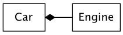
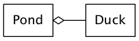

Chapter 01: Introduction to Objects
Table of Contents
- Introduction to Objects
- The progress of abstraction
- An object has an interface
- An object procides services
- The hidden implementation
- Reusing the implementation
- Inheritance
- Is-a vs. is-like-a relationship
- Interchangeable objects with polymorphism
- The singly rooted hierarchy
- Containers
- Parameterized types (generics)
- Object creationg & lifetime
- Exception handling: dealing with errors
- Concurrent programming
- Java and the Internet
Introduction to Objects
The progress of abstraction
- 所有的编程语言都提供了抽象:汇编是对机器码的抽象,c语言是对汇编的抽象
- c语言的抽象还是不够彻底:编程时,你依然需要了解很多关于"计算机组成部分"的知识, 而不是全身心的投入进去解决你的问题
- 后来者提供了更进一步的抽象,比如LISP就认为所有的问题最终都是list.
- 最后,我们来到了面向对象编程,它提供了当前最好的抽象:OOP允许你描述问题的时候, 描述的就是问题本身,而不需要描述机器的运行方法
- Java是在smalltalk的基础上建立起来的.两者都有如下特性,这些特性成就了一个纯
的面向对象语言:
- Everything is an object
- A program is a bunch of objects telling each other what to do by sending message
- Each object has its own memory made up of other objects
- Every object has a type.
- All objects of a particular type can receive the same message.
- 总结起来讲就是说一个object有:
- state (object有内部数据)
- behavior (object有public函数)
- identity (每个object都有自己独特的内存地址)
An object has an interface
- 在面向对象编程中,类这个概念很特殊,它的来历是
Objects that are identical except for their state during a program's execution are grouped together into "classes of objects"
- 类的用处,就是描述一类objects,他们有相同的特质(数据), 和相同的行为(函数).类 其实就是程序员自己定义的type.
- 为了让类能够做一些我们想要的动作,我们就需要类有自己的interface: 比如下面的
on(), off()等等
- interface只是指出了函数的使用方法(类似于函数声明),比如有其他地方的代码来实 现这些函数
An object procides services
- 一个对object的简单的理解方式是"把object理解为一个服务提供商":你的程序其实是 给用户提供服务, 而这个服务间接的由object提供出来.
- 这样的话,用java写程序其实就是把一个问题拆成多个object,如果这个object库里面 有,就直接用.否则就自己写
- 把object想象成service provider有很多额外的好处:
- 提高内聚性:很多object设计的毛病源自于一个object里面有太多的功能.
- 别人更容易理解你的代码,从而更好的复用.
The hidden implementation
- 在程序创作的过程中,很有必要把代码分成两个部分:
- class creator : thoses who create new data types: 类的创建者的目标是,创建 一个类,但是只暴露尽可能少的接口给用户(在完成功能的前提下)
- client programmer : class consumers who use the data type in their applcation:在一系列类的帮助下,进行快速开发
- 正是因为类的创建者需要在完成功能的情况下尽可能的少暴露他的接口.所以我们有如
下三种关键字来确定暴露和保护:
- public: 其修饰的代码能够为任何人所使用
- private: 其修饰的代码只能被自己看到
- protected: 其修饰作用和private一样,只是有一个例外,继承类可以访问父类的 protected部分(但不能访问其父类的private部分)
Reusing the implementation
- 代码重用是OOP的强大优势
- 最常见的代码重用的方法是 object composition:它往往代表一种"has-a"关系.

- 当然object composition还有一个变体就是aggregation,也是"has-a"关系,只不过被包
含的部分数量经常变化.(一个池塘里面鸭子的数量经常改变)

- composition有与生俱来的灵活性,因为被has的成员对象(member object)通常都是 private的, 这就意味着你可以随意改动他们,而不会对class client造成伤害.
- 使用composition,你甚至可以在运行期动态改变他们.而对于inheritance,你只能在 compile-time来创建.
Inheritance
- object的初衷是为了方便:可以把数据和函数打包,然后把主要精力放到解决问题,而不 需要同时兼顾各种系统的功能.所以我们引入了class来创建某种object
- 而inheritance则是为了能够小幅度的改变一个class,增加一些新的东西,就引入一个 新的class.老的class就叫做base,新才class就叫做derived.
- 继承的特点就是derived会随着base的改变而改变.这种改变不能说一定是好事
- 从一个base创建出一个derived的过程中,derived不仅仅拷贝了base的所有的数据(非 private的), 同时,更重要的是,derived拷贝了所有的interface.换句话说就是,所有 传递给base对象的,现在也可以传递给derived对象了.
- 所以derived和base类型是"一样的", inheritance的这种类型一致性是其特点
- 有两种方法让derived class变得更加与众不同一点:
- 添加新的interface:这很好理解,我比base class多了几种调用方法
- 更改已有的interface的内部实现
- 第1种方法看起来更符合java "extend"的感觉(延伸么…),但其实一般情况下,derived 基本都是靠第2种方法(Overriding)来让自己变得和base不那么一样.
Is-a vs. is-like-a relationship
- 如果一个derived class只更改了base的接口实现,自己并没有添加新的接口,那么我们 说这种继承较pure substitution,因为type完全相同,所以可以说是一种"is-a"的关系
- 如果你万不得已在derived里面引入了新的接口(函数),那也没问题,我们把他叫做一种 "is-like-a"的关系:这种关系也没啥问题,只是你新加了功能,可以有些组件是为你的base 的类写的,他并不知道你的新功能.
Interchangeable objects with polymorphism
- 我们之所以喜欢pure substitution是因为我们编程的时候,可以把所有的derived当作 是base(因为他们type其实"完全一致")
- 虽然编程上省了事,但编译器却要通过late binding的方式来完成在运行期才决定运行 哪个内存上代码的功能.这种late binding的方式叫做polymorphism(多肽)
- Java默认dynamic binding是class内部的函数的缺省行为, 不需要virtual(像c++ 一样)指定.
The singly rooted hierarchy
- Java不支持多继承模式,这有很多的好处:
- 可以对一类object施以同样的操作
- 所有的对象都可以在heap上创建
- argument传递变得简单
- garbage collector在单继承上更为简单
Containers
- container是一种保留着其他object ref的新type.它的大小可以动态决定.
Parameterized types (generics)
- 在JAVA5之前,container里面所有的内容都是Object类型的.所以container实现起来很 简单
- 但是container使用起来却有点风险.比如Shape类型的要先upcast成Object,然后存入, 读取的时候,要再downcast成Shape
- upcast总是成立的,因为Shape是一个Object,但是downcast却并不是总是成立,存在 着downcast的危险(虽然也会抛出异常,但是毕竟增加了成本)
- 新的container的处理办法是泛型编程
ArrayList<Shape> shapes = new ArrayList<Shape>();
Object creationg & lifetime
- java使用new来创建新的heap object
- java所有的内存都是通过garbage collection来回收的.
Exception handling: dealing with errors
- Java把错误处理写入到了程序语言里面,那就是:exception
- 抛出的exception是由exception handler来处理的, exception handler就像和main函 数并行运行一样,平时不出现,exception出现的时候,他就出手相救了.
Concurrent programming
- java5开始支持多线程编程